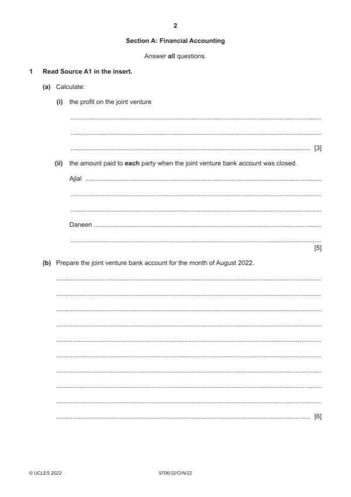

Question 1

Original paper page 2
Part 1(a)(i) — solution
- (3 900 +400) (1) – (800 +1 650 +420) (1) = $1 430 (1)OF 3
Mark points
- (3 900 +400) (1) – (800 +1 650 +420) (1) = $1 430 (1)OF 3
Part 1(a)(ii) — solution
- Ajlal 1 000 + 550 (1) - 400 (1) + 715 (1of) = $1 865 (1)OF 5
- Daneen 1 200 + 715 = $1 915 (1)OF
Mark points
- Ajlal 1 000 + 550 (1) - 400 (1) + 715 (1of) = $1 865 (1)OF 5
- Daneen 1 200 + 715 = $1 915 (1)OF
Part 1(b) — solution
Answer: 6
6
Joint venture bank account
$ $
Ajlal 1 000 } Joint venture a/c 800 }
Daneen 1 200 }(1) Joint venture a/c 420 }(1)
Joint venture a/c (sales) 3 900 (1) Joint venture a/c 1 100 (1)
Ajlal 1 865 (1)OF
Daneen 1 915 (1)OF
Mark points
- Correct result: 6
Part 1(c) — solution
The equal split of profit mirrors the equal split of hours (1) but Ajlal spent additional time making the chocolates (1). 3
Daneen put in more cash at the start ($1200 v $1000) (1) but Ajlal put in more cash in total as she paid for ingredients
($1550 against $1200) (1).
But Ajlal had the added benefit of finding out how well her chocolates would sell (1).
Accept other valid responses.
Max 3
2022 Page 7 of 22
9706/32 Cambridge International AS & A Level – Mark Scheme October/November 2022
Mark points
- Include the ideas shown in the solution above.
Part 1(d) — solution
Operating alone – Ajlal would not have to share the profit (1) but the profit would be lower because of the assistant’s wages 4
(1).
Ajlal would bear all the risk alone (1) and have to find all the capital herself (1). She now has both funds and fittings from
the running of the previous stall (1).
Repeating the joint venture – The risk is shared (1) and additional capital is available to help with set up costs (1). A party to
a joint venture may be more reliable than an employee as they have a stake in the profit (1).
Accept other valid responses
Max 3 for comments Decision 1 mark
Mark points
- Include the ideas shown in the solution above.
Part 1(e) — solution
A large limited company requires an audit (1) as it is a statutory requirement (1) but other businesses or organisations may 2
choose to have an audit (1).
Max 2
Accept other valid responses
Mark points
- Include the ideas shown in the solution above.
Part 1(f) — solution
Proper books of account have been maintained (1). 2
The financial statements are in accordance with the books of account (1).
The financial statements give a true and fair view / are free from material errors and mis-statements (1).
The financial statements comply with legislation and standards (1).
Max 2
Accept other valid responses
2022 Page 8 of 22
9706/32 Cambridge International AS & A Level – Mark Scheme October/November 2022
Mark points
- Include the ideas shown in the solution above.
Part 1 — solution
uninsured amount (2 000) (1)
Mark points
- Include the ideas shown in the solution above.